2020年普通高等学校招生全国统一考试 理科综合能力测试（全国Ⅰ卷）
注意事项：1．答卷前，考生务必将自己的姓名、准考证号填写在答题卡上。2．回答选择题时，选出每小题答案后，用铅笔把答题卡上对应题目的答案标号涂黑，如需改动，用橡皮擦干净后，再选涂其它答案标号。回答非选择题时，将答案写在答题卡上，写在本试卷上无效。3．考试结束后，将本试卷和答题卡一并交回。
本册收录物理部分，保留原题号14—25、33、34及全部小问；其他学科题文和相对原子质量表不属于本册范围。物理作答总分为110分：选择题48分、必考非选择题47分、选考15分。33、34两题均提供解析，考试时按原卷规则任选一题作答。
相关题目：第 14 题
本题共8小题，每小题6分，共48分。在每小题给出的四个选项中，第14—18题只有一项符合题目要求，第19—21题有多项符合题目要求。全部选对的得6分，选对但不全的得3分，有选错的得0分。
相关题目：第 14 题 · 第 15 题 · 第 16 题 · 第 17 题 · 第 18 题 · 第 19 题 · 第 20 题 · 第 21 题
返回原卷说明与本册范围 返回二、选择题（48分）
题目与已知条件
行驶中的汽车如果发生剧烈碰撞，车内的安全气囊会被弹出并瞬间充满气体。若碰撞后汽车的速度在很短时间内减小为零，关于安全气囊在此过程中的作用，下列说法正确的是（ ）。
读题与思路
气囊通过延长人体减速时间、增大受力面积，减小平均作用力和压强，并不改变人体停止时的总动量变化。
分步解析
- 司机从随车运动变为静止，初末速度确定时，总动量变化大小mv确定。
- 平均作用力满足F平均Δt=mv。气囊延长受力时间Δt，使平均力减小；又增大身体受力面积，使单位面积受力减小，A错误而D正确。
- 动量的变化量与初末状态有关，不能说气囊减少了碰撞前后司机的动量变化量，B错误。
- 碰撞中部分机械能转化为内能、形变能等，不能把司机动能全部看成汽车动能，C错误。
检查与易错点
缓冲改变的是力作用的时间和分布；初末速度相同的情况下，冲量总量并不会因此变小。
本题来源：paper · cross · web-eol-current · drive-ref-1
返回二、选择题（48分）
题目与已知条件
火星的质量约为地球质量的1/10，半径约为地球半径的1/2，则同一物体在火星表面与在地球表面受到的引力的比值约为（ ）。
读题与思路
同一物体的质量可约去，表面重力与星球质量成正比、与半径平方成反比。
分步解析
- 在星球表面，F=GMm/R²。火星质量约为地球的1/10，半径约为地球的1/2。
- 同一物体在两星表面的引力比为F火/F地=(1/10)/(1/2)²=0.4，选B。
检查与易错点
半径比要平方；不是直接用质量比除以半径比。
本题来源：paper · cross · web-eol-current · drive-ref-1
返回二、选择题（48分）
题目与已知条件
如图，一同学表演荡秋千。已知秋千的两根绳长均为10 m，该同学和秋千踏板的总质量约为50 kg，绳的质量忽略不计。当该同学荡到秋千支架的正下方时，速度大小为8 m/s，此时每根绳子平均承受的拉力约为（ ）。
依据原题条件重新绘制，位置关系与物理量保持一致。查看原题图／原始配图
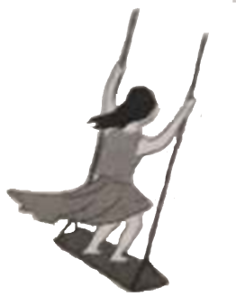
原题来源中的未美化配图（原Word内嵌图）读题与思路
最低点向心方向竖直向上，两根绳的总拉力减去重力才是向心力。
分步解析
- 取人与踏板整体，质量约m=50 kg。圆周半径为绳长r=10 m，最低点速度v=8 m/s。
- 设每根绳平均拉力T，两根绳共同作用，有2T−mg=mv²/r。
- 取g≈10 m/s²，则2T=50×10+50×64/10=820 N，T≈410 N，最接近400 N，选B。
检查与易错点
不能把向心力mv²/r当作绳的拉力；也不能把两根绳的总拉力当作每根绳的拉力。
本题来源：paper · cross · web-eol-current · drive-ref-1
返回二、选择题（48分）
题目与已知条件
图(a)所示的电路中，K与L间接一智能电源，用以控制电容器C两端的电压UC。如果UC随时间t的变化如图(b)所示，则下列描述电阻R两端电压UR随时间t变化的图像中，正确的是（ ）。
依据原题重绘；零值线段与时间轴重合；虚线均为读图辅助线。四个选项的正负方向、时间区间和幅度比例与原图一致。为便于读图，四个备选图的文字描述如下（正平台指1—2 s的电压大小）：
A.0—1 s为零；1—2 s为恒定正值；2—3 s为零；3—5 s为恒定负值，负值的大小为正平台的一半。
B.0—1 s为零；1—2 s为恒定正值；2—3 s为零；3—5 s仍为恒定正值，大小为前一正平台的一半。
C.0—1 s为零；1—2 s为恒定正值；2—3 s为零；3—5 s为恒定负值，正、负平台的大小相等。
D.0—1 s为零；1—2 s从零均匀升至正平台；2—3 s保持正平台；3—5 s均匀降至零。
查看原题图／原始配图
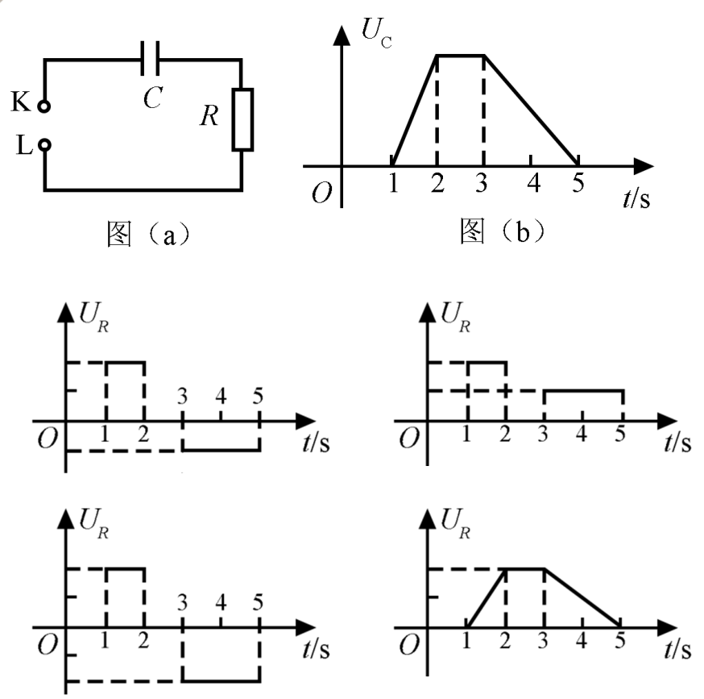
原Word图(a)、图(b)及四个选项原图按A/B/C/D顺序拼接，未重采样、未改动图内像素。读题与思路
电容器的电压决定储存电荷，电压变化快慢决定电流；电阻电压跟随电流而不是跟随电容电压。
分步解析
- 由Q=CUC，一个电压随时间线性变化的时间段内，电流为I=ΔQ/Δt=CΔUC/Δt，因此UR=RI正比于UC—t图像的有向斜率。
- 0～1 s电容电压为0且不变，1～2 s均匀增大，2～3 s保持不变，3～5 s均匀减小；对应的电流分别为0、正、0、负。
- 设电容电压的平台值为U₀。1～2 s的斜率为U₀/(1 s)，3～5 s的斜率为−U₀/(2 s)，所以负电阻电压的大小为正电压的一半。0～1 s和2～3 s电流为0，相应电阻电压也为0。
- 只有A图同时满足符号、各段持续时间与幅度比例。B把反向电流画成同向，C的分段幅度不符，D误把电阻电压画成电容电压的形状。
检查与易错点
电容电压非零而保持不变时，电容电荷不变，串联电路电流为0，电阻电压也为0。这里只用有限时间段的变化率，不需微分。
本题来源：paper · cross · web-eol-current · drive-ref-1
返回二、选择题（48分）
题目与已知条件
一匀强磁场的磁感应强度大小为B，方向垂直于纸面向外，其边界如图中虚线所示，ab为半圆，ac、bd与直径ab共线，ac间的距离等于半圆的半径。一束质量为m、电荷量为q（q>0）的粒子，在纸面内从c点垂直于ac射入磁场，这些粒子具有各种速率，不计粒子之间的相互作用。在磁场中运动时间最长的粒子，其运动时间为（ ）。
依据原题条件重新绘制，位置关系与物理量保持一致。查看原题图／原始配图
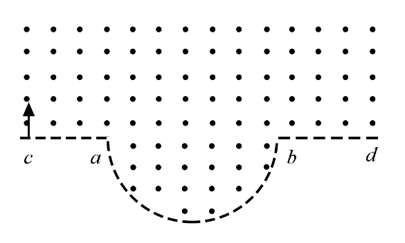
原题来源中的未美化配图（原Word内嵌图）所用高中知识
洛伦兹力；圆周周期；余弦定理；几何最值。
读题与思路
磁场中的角速度qB/m与速率无关，所以最长时间等价于最大的圆心角。需考虑穿过直线ab后仍处于下半圆磁场内的长弧。
分步解析
- 设磁场边界半圆半径为R₀，轨迹半径为r，半圆圆心为O，轨迹圆心为K。令a坐标0，b坐标2R₀，c坐标−R₀。正粒子从c向上射入、磁场向外，轨迹顺时针，K坐标r−R₀。
- 若粒子转过半周后落在a左侧或b右侧，就在直线边界离开磁场，转角为π。只有R₀/2<r<3R₀/2时，半周后的交点在ab间，粒子还会继续走入下方半圆，运动时间更长。
- 对此情形，OK=2R₀−r，设在下半圆出射于P，∠OKP=α，则总轨道转角为π+α。三角形OKP中KP=r、OP=R₀，余弦定理给cosα=[r²+(2R₀−r)²−R₀²]/[2r(2R₀−r)]。
- 整理得cosα=3R₀²/[2r(2R₀−r)]−1。由r(2R₀−r)=R₀²−(r−R₀)²≤R₀²，知cosα≥1/2，所以α≤π/3。当r=R₀时取等号，此时OKP为等边三角形。
- 最大转角为π+π/3=4π/3，即240°。由角速度ω=qB/m，最长时间tmax=(4π/3)/ω=4πm/(3qB)，对应C。
检查与易错点
不能一看到半圆边界就把运动时间限制为半周期。实际最优轨迹在磁场内转过240°。
本题来源：paper · cross · web-eol-current · drive-ref-1
返回二、选择题（48分）
题目与已知条件
下列核反应方程中，X₁、X₂、X₃、X₄代表α粒子的有（ ）。
C.
读题与思路
逐项比较反应两边的质量数和电荷数。α粒子为质量数4、电荷数2的氦核。
分步解析
- A项：两个氘核总质量数4、电荷数2，扣除一个中子后X₁的质量数3、电荷数2，是氦-3核，不是α粒子。
- B项：氘核与氚核总质量数5、电荷数2，扣除一个中子后X₂为42He，是α粒子。
- C项：反应前质量数235+1=236，已列产物质量数144+89=233，余下3X₃合计质量数3；电荷数92−56−36=0。因此X₃是10n。
- D项：中子与锂-6总质量数7、电荷数3，扣除氚核的质量数3、电荷数1后，X₄为42He。故B、D正确。
检查与易错点
核反应中质量数守恒不等于质量严格守恒，核能对应质量亏损；本题只需守恒数值识别粒子。
本题来源：paper · cross · web-eol-current · drive-ref-1
返回二、选择题（48分）
题目与已知条件
一物块在高3.0 m、长5.0 m的斜面顶端从静止开始沿斜面滑下，其重力势能和动能随下滑距离s的变化如图中直线Ⅰ、Ⅱ所示。重力加速度取10 m/s²。则（ ）。
依据原题条件重新绘制，位置关系与物理量保持一致。查看原题图／原始配图
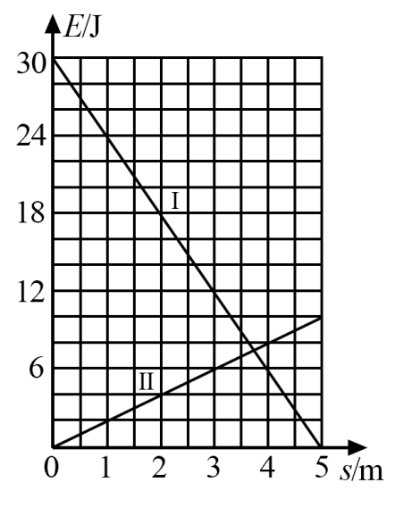
原题来源中的未美化配图（原Word内嵌图）读题与思路
先由初始重力势能确定质量，再用动能增加量求加速度和摩擦力。
分步解析
- 初始重力势能30 J，高度3.0 m，所以mgH=30 J，取g=10 m/s²得m=1.0 kg。斜面sinθ=3/5，cosθ=4/5。
- 由图，沿斜面下滑5.0 m，重力势能由30 J降到0，动能由0升到10 J；机械能减少20 J，并不守恒，A正确。
- 摩擦力恒定，f×5=20，所以f=4 N。支持力N=mg cosθ=8 N，动摩擦因数μ=f/N=0.5，B正确。
- 合力沿斜面向下为mg sinθ−f=6−4=2 N，a=2 m/s²，C给6.0 m/s²不对。
- 下滑2.0 m时摩擦耗能为f s=4×2=8 J，不是12 J。12 J是这段减少的重力势能，其中4 J转为动能，D错误。
检查与易错点
机械能损失对应摩擦功，不等于重力势能的全部减少量。
本题来源：paper · cross · web-eol-current · drive-ref-1
返回二、选择题（48分）
题目与已知条件
如图，U形光滑金属框abcd置于水平绝缘平台上，ab和dc边平行，与bc边垂直，ab、dc足够长，整个金属框电阻可忽略。一根具有一定电阻的导体棒MN置于金属框上，用水平恒力F向右拉动金属框，运动过程中，装置始终处于竖直向下的匀强磁场中，MN与金属框保持良好接触，且与bc边保持平行。经过一段时间后（ ）。
依据原题条件重新绘制，位置关系与物理量保持一致。查看原题图／原始配图
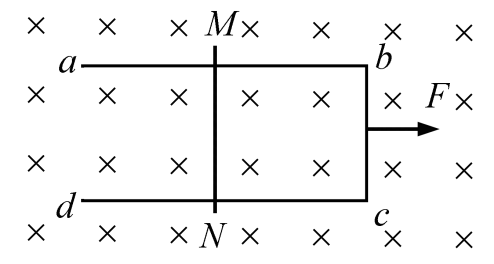
原题来源中的未美化配图（原Word内嵌图）所用高中知识
电磁感应；相对速度；安培力；整体与隔离法。
读题与思路
棒和框都能运动，感应电动势取决于两者相对速度。最后趋于相同非零加速度，而非静止或速度相同。
分步解析
- 设框质量M、棒质量m、棒有效长度l、回路电阻R，框和棒的水平速度分别为v框、v棒。相对速度u=v框−v棒，感应电动势ε=Blu，电流I=Blu/R。
- 框向右使回路面积增加，感应作用阻碍相对运动：棒受向右安培力，框受等大向左安培力。力大小FB=B²l²u/R。
- 各自加速度为a框=(F−FB)/M，a棒=FB/m。起初u小，框加速度较大，u增加；随u增加，安培力增大、棒加速度增大、框加速度减小，二者趋于相等。
- 趋稳时共同加速度a=F/(M+m)，安培力FB=ma=mF/(M+m)，均为非零定值。因此B、C正确。
- 共同加速度不为0，框的速度继续增加，所以A错误。稳定的相对速度u=mFR/[(M+m)B²l²]也不为0，棒到bc边的距离继续增加，不趋于定值，D错误。
检查与易错点
“趋于定值”是理想模型的渐近描述，不必声称在某个有限时刻完全达到。两者同加速度不等于同速度。
本题来源：paper · cross · web-eol-current · drive-ref-1
原理综卷：非选择题共174分。第22—32题为必考题，每个试题考生都必须作答。第33—38题为选考题，考生根据要求作答。
（一）必考题，共129分。以上174分、129分均为整份理综的跨科分值。本册物理必考题为22—25题，共47分。
相关题目：第 22 题 · 第 23 题 · 第 24 题 · 第 25 题
返回三、非选择题与必考题
题目与已知条件
（6分）某同学用伏安法测量一阻值为几十欧姆的电阻Rx，所用电压表的内阻为1 kΩ，电流表的内阻为0.5 Ω。该同学采用两种测量方案，一种将电压表跨接在图(a)所示电路的O、P两点之间，另一种跨接在O、Q两点之间。测量得到如图(b)所示的两条U—I图线，其中U与I分别为电压表和电流表的示数。
图(a)：依据原题电路重绘。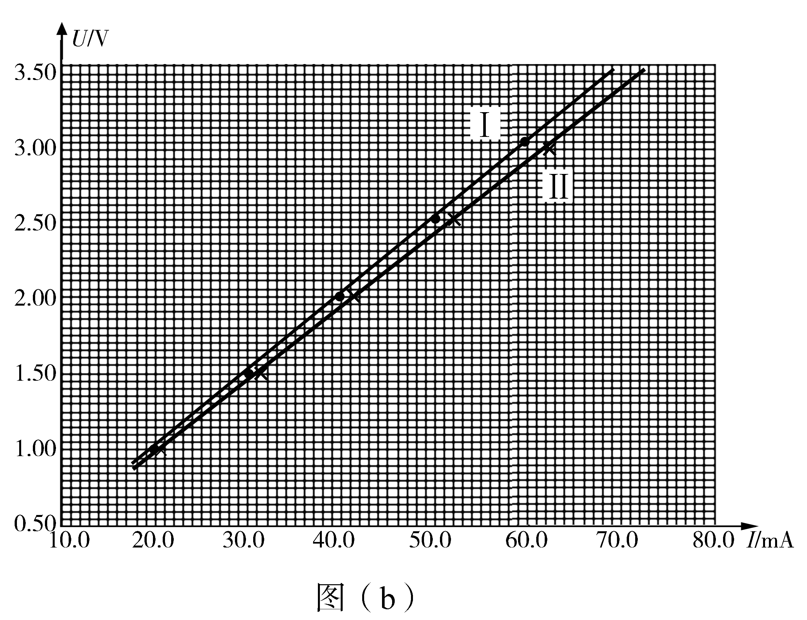
图(b)：原Word内高分辨率U-I实验图。原测量点、拟合线和全部刻度不作重绘。图(b)刻度说明：横轴I/mA，从10.0至80.0；纵轴U/V，从0.50至3.50。Ⅰ为较陡图线，Ⅱ为较缓图线。
回答下列问题：
（1）图(b)中标记为Ⅱ的图线是采用电压表跨接在______（填“O、P”或“O、Q”）两点的方案测量得到的。
（2）根据所用实验器材和图(b)可判断，由图线______（填“Ⅰ”或“Ⅱ”）得到的结果更接近待测电阻的真实值，结果为______Ω（保留1位小数）。
（3）考虑实验中电表内阻的影响，需对（2）中得到的结果进行修正，修正后待测电阻的阻值为______Ω（保留1位小数）。
查看原题图／原始配图
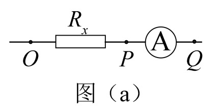
原题来源中的未美化配图（原Word内嵌图）原题来源中的未美化配图（原Word内嵌图）所用高中知识
伏安法；电流表分压；电压表分流；图线斜率。
读题与思路
电压表接OP时只测电阻电压但分流，接OQ时测电阻与电流表的总电压；比较两种系统误差。
分步解析
- 电压表接O、P时，与待测电阻并联。电流表读总电流I=IR+IV，因此U/I=RxRV/(Rx+RV)<Rx。它对应斜率较小的图线Ⅱ，所以（1）填O、P。
- 电压表接O、Q时，U同时包含待测电阻和电流表的分压，而电流表读待测支路电流，所以U/I=Rx+RA，对应斜率较大的Ⅰ。
- 待测电阻约50 Ω，电流表内阻0.5 Ω使Ⅰ结果偏大约1%；电压表内阻1000 Ω使Ⅱ结果偏小约50/(1000+50)≈4.8%。因此Ⅰ更接近真实值。
- 对图线Ⅰ取较大范围读斜率，约得到U/I=50.5 Ω（例如沿拟合线取I≈60.0 mA、U≈3.03 V）。故（2）填Ⅰ、50.5 Ω。
- Ⅰ的系统误差为电流表的串联电阻，故修正后Rx=50.5−0.5=50.0 Ω，保留1位小数。
答案
（1）O、P；（2）Ⅰ，50.5 Ω；（3）50.0 Ω。
检查与易错点
横轴单位是mA，计算电阻时必须换成A。图线斜率属于读图估读，50.5 Ω为本图的参考读数，取点不同可能有末位差异；修正时应从图线Ⅰ的结果中减去电流表内阻0.5 Ω，而不是加上。
本题来源：paper · cross · web-eol-current · drive-ref-1
返回三、非选择题与必考题
题目与已知条件
（9分）某同学利用如图所示的实验装置验证动量定理，所用器材包括：气垫导轨、滑块（上方装有宽度为d的遮光片）、两个与计算机相连接的光电门、砝码盘和砝码等。
依据原题条件重新绘制，位置关系与物理量保持一致。实验步骤如下：
（1）开动气泵，调节气垫导轨，轻推滑块，当滑块上的遮光片经过两个光电门的遮光时间______时，可以认为气垫导轨水平。
（2）用天平测砝码与砝码盘的总质量m₁、滑块（含遮光片）的质量m₂。
（3）用细线跨过轻质定滑轮将滑块与砝码连接，使细线水平拉动滑块。
（4）令滑块在砝码和砝码盘的拉动下从左边开始运动，利用计算机连接的光电门测量出遮光片经过A、B两处的光电门的遮光时间Δt₁、Δt₂及遮光片从A运动到B所用的时间t₁₂。
（5）在遮光片随滑块从A运动到B的过程中，如果将砝码和砝码盘所受重力视为滑块所受拉力，拉力冲量的大小I=______，滑块动量改变量的大小Δp=______。（用题中给出的物理量及重力加速度g表示）
（6）某次测量得到的一组数据为：d=1.000 cm，m₁=1.50×10−2 kg，m₂=0.400 kg，Δt₁=3.900×10−2 s，Δt₂=1.270×10−2 s，t₁₂=1.50 s。取g=9.80 m/s²。计算可得I=______N·s，Δp=______kg·m·s−1。（结果均保留3位有效数字）
（7）定义δ=|（I−Δp）/I|×100%，本次实验δ=______%。（保留1位有效数字）
查看原题图／原始配图
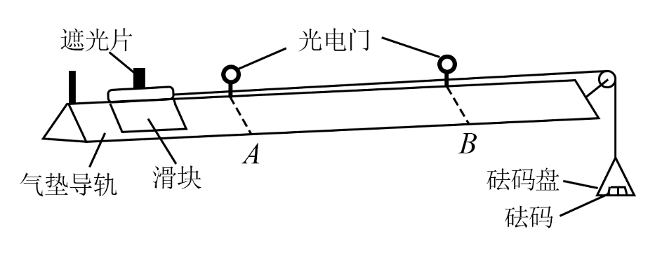
原题来源中的未美化配图（原Word内嵌图）所用高中知识
短时间平均速度；冲量；动量变化；实验相对差。
读题与思路
以遮光片宽度除以遮光时间估计通过光电门时的速度；两门之间的运动时间与单次遮光时间不能混用。
分步解析
- （1）未挂砝码、轻推滑块调平时，若遮光片通过两个光电门的遮光时间大约相等，则两处速率大约相等，可认为气垫导轨水平。
- （5）记遮光时间分别为Δt₁、Δt₂，两门间用时为t₁₂。速度vA≈d/Δt₁，vB≈d/Δt₂。题设近似把砝码及托盘重力看作拉力，则冲量I=m₁gt₁₂；滑块动量改变量Δp=m₂d(1/Δt₂−1/Δt₁)。
- （6）先换单位：d=1.000 cm=0.01000 m，m₁=0.0150 kg，m₂=0.400 kg。代入得到I=0.0150×9.80×1.50=0.2205 N·s，保留3位有效数字为0.221 N·s。
- Δp=0.400×0.01000×[1/(1.270×10−2)−1/(3.900×10−2)] kg·m/s≈0.2123965 kg·m/s，保留3位有效数字为0.212 kg·m/s。
- （7）使用未提前舍入的中间结果：δ=|I−Δp|/I×100%≈3.7%，保留1位有效数字为4%。
- 拉力实际上略小于悬挂物重力，因为悬挂物也在加速；故把m₁g当拉力会使估计冲量偏大。这里m₁远小于m₂，是该近似成立的实验条件之一。
答案
（1）大约相等；（5）I=m₁gt₁₂，Δp=m₂d(1/Δt₂−1/Δt₁)；（6）0.221 N·s，0.212 kg·m/s；（7）4%。
检查与易错点
原题两门间时间为1.50 s，末尾s为秒的单位。N·s与kg·m/s等价；不可把遮光时间Δt当成拉力作用的全过程时间。
本题来源：paper · cross · web-eol-current · drive-ref-1
返回三、非选择题与必考题
题目与已知条件
（12分）我国自主研制了运-20重型运输机。飞机获得的升力大小F可用F=kv²描写，k为系数；v是飞机在平直跑道上的滑行速度，F与飞机所受重力相等时的v称为飞机的起飞离地速度。已知飞机质量为1.21×105 kg时，起飞离地速度为66 m/s；装载货物后质量为1.69×105 kg，装载货物前后起飞离地时的k值可视为不变。
（1）求飞机装载货物后的起飞离地速度。
（2）若该飞机装载货物后，从静止开始匀加速滑行1521 m起飞离地，求飞机在滑行过程中加速度的大小和所用的时间。
读题与思路
起飞临界时升力等于重力；k相同可用两状态相比直接消去。
分步解析
- 设装载前后质量分别m₁=1.21×10⁵ kg、m₂=1.69×10⁵ kg，起飞速度分别v₁=66 m/s、v₂。临界条件为kv₁²=m₁g、kv₂²=m₂g。
- 相除得v₂/v₁=√(m₂/m₁)=√(1.69/1.21)=13/11，故v₂=66×13/11=78 m/s。
- 装载后从静止匀加速滑跑s=1521 m，v₂²=2as，得到a=78²/(2×1521)=2.0 m/s²。
- 再由v₂=at，得到t=78/2.0=39 s。也可用平均速度v₂/2，算t=2s/v₂。
答案
（1）78 m/s；（2）2.0 m/s²，39 s。
检查与易错点
装载后1.69×10⁵ kg已经是飞机总质量，不能再加上装载前质量。速度与质量的平方根成正比。
本题来源：paper · cross · web-eol-current · drive-ref-1
返回三、非选择题与必考题
题目与已知条件
（20分）在一柱形区域内有匀强电场，柱的横截面是以O为圆心、半径为R的圆，AB为圆的直径，如图所示。质量为m、电荷量为q（q>0）的带电粒子在纸面内自A点先后以不同的初速度进入电场，速度方向与电场的方向垂直。已知刚进入电场时速度为零的粒子，自圆周上的C点以速率v₀穿出电场，AC与AB的夹角θ=60°。运动中粒子仅受电场力作用。
依据原题条件重新绘制，位置关系与物理量保持一致。（1）求电场强度的大小。
（2）为使粒子穿过电场后的动能增量最大，该粒子进入电场时的速度应为多大？
（3）为使粒子穿过电场前后动量变化量的大小为mv₀，该粒子进入电场时的速度应为多大？
查看原题图／原始配图
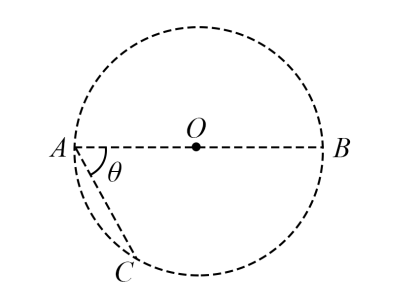
原题来源中的未美化配图（原Word内嵌图）所用高中知识
匀强电场；运动分解；圆方程；动能定理；冲量。
读题与思路
零初速轨迹先确定电场方向和大小；再建立沿电场和垂直电场的直角坐标，用圆的几何范围处理最值与交点。
分步解析
- （1）初速度为0的正粒子只受电场力，从A沿AC直线出场，所以电场方向由A指向C。AB为直径2R，∠CAB=60°，直角三角形ACB给AC=2R cos60°=R。
- 沿AC由静止加速，qER=mv₀²/2，得E=mv₀²/(2qR)，加速度a=qE/m=v₀²/(2R)。
- 取A为原点，沿电场方向为+y，垂直电场且指向圆内为+x。圆心坐标为(√3R/2，R/2)，圆方程为(x−√3R/2)²+(y−R/2)²=R²。初速度为v时，x=vt，y=at²/2。
- （2）动能增量ΔK=qEy，只取决于沿电场的位移。圆内y最大为R/2+R=3R/2，对应边界点D(√3R/2，3R/2)。
- 到D时，at²/2=3R/2，故t=√(3R/a)=√6R/v₀；初速度须为v=x/t=(√3R/2)/(√6R/v₀)=√2v₀/4。令s为实际运动时间与到D时间之比，把x=(√3R/2)s、y=(3R/2)s²代入圆方程左边再减R²，得到(3R²/4)s(s−1)(3s²+3s+2)。在0<s<1内为负，说明到D前始终在圆内，故D确为首次出场点，取得最大动能增量3mv₀²/4。
- （3）垂直电场的动量不变，沿电场的动量由0变为mat，所以动量变化量大小为mat。令mat=mv₀，得到t*=v₀/a=2R/v₀，对应y=at*²/2=R。
- 把y=R代入圆方程，得(x−√3R/2)²=3R²/4，故x=0或x=√3R。由v=x/t*，分别得到v=0或v=√3v₀/2，两个解都须保留。
- 核对首次出场：令s=t/t*。对v=0，圆方程左边减R²等于R²s²(s²−1)；对v=√3v₀/2，相应差值为R²s(s−1)(s²+s+3)。在0<s<1内二者都小于0，即一直在圆内，到t*才第一次到边界，因此两解均有效。
答案
（1）E=mv₀²/(2qR)，方向由A指向C；（2）v=√2v₀/4；（3）v=0或v=√3v₀/2。
检查与易错点
本题“动量变化量的大小”是矢量差的模，不是两个速率之差乘质量。零初速是题干明确允许的情况，不能漏解。
本题来源：paper · cross · web-eol-current · drive-ref-1
原理综卷：选考题共45分。请考生从2道物理题、2道化学题、2道生物题中每科任选一题作答。如果多做，则每学科按所做的第一题计分。
本册物理选考题为第33、34题，每题15分。以下两道题均完整收录。
相关题目：第 33 题 · 第 34 题
返回（二）选考题
题目与已知条件
33．［物理——选修3—3］（15分）
（1）（5分）分子间作用力F与分子间距r的关系如图所示，r=r₁时，F=0。分子间势能由r决定，规定两分子相距无穷远时分子间的势能为零。若一分子固定于原点O，另一分子从很远处向O点运动，在两分子间距减小到r₂的过程中，势能______（填“减小”“不变”或“增大”）；在间距由r₂减小到r₁的过程中，势能______（填“减小”“不变”或“增大”）；在间距等于r₁处，势能______（填“大于”“等于”或“小于”）零。
依据原题定性关系重绘：保留零点r₁、吸引力极值位置r₂与力的符号，不新增数值刻度。（2）（10分）甲、乙两个储气罐储存有同种气体（可视为理想气体）。甲罐的容积为V，罐中气体的压强为p；乙罐的容积为2V，罐中气体的压强为p/2。现通过连接两罐的细管把甲罐中的部分气体调配到乙罐中去。两罐中气体温度相同且在调配过程中保持不变，调配后两罐中气体的压强相等。求调配后：
（i）两罐中气体的压强；
（ii）甲罐中气体的质量与甲罐中原有气体的质量之比。
查看原题图／原始配图
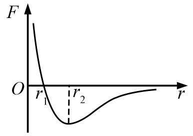
原题来源中的未美化配图（原Word内嵌图）所用高中知识
分子力；势能与做功；等温气体状态；质量守恒。
读题与思路
分子力图判断力的方向而非直接读势能；气体问题在同温下以pV代表气体量。
分步解析
- （1）图中r>r₁时分子力为引力。另一分子从远处向O运动，位移向内，引力做正功，分子势能减小。这个结论在从远处到r₂、再从r₂到r₁两段都成立，前两空均为“减小”。
- 规定无穷远势能为0。从无穷远到r₁，引力总做正功，故r₁处势能小于0；r₁是势能最低的位置，而不是势能为0的位置。
- （2）（i）设最终共同压强p′，温度保持相同不变。初始气体量对应pV+(p/2)×2V=2pV，最终对应p′(V+2V)=3p′V。总气体量守恒，故3p′V=2pV，p′=2p/3。
- （ii）甲罐体积V、温度T不变，气体质量与压强成正比，所以调配后与原来质量之比为p′V/(pV)=p′/p=2/3。
答案
（1）减小；减小；小于。（2）（i）2p/3；（ii）2/3。
检查与易错点
分子力F=0仅说明势能取极值，不能据此判定势能为0。两罐体积不同，最终压强不是初始压强的算术平均。
本题来源：paper · cross · web-eol-current · drive-ref-1
返回（二）选考题
题目与已知条件
34．［物理——选修3—4］（15分）
（1）（5分）在下列现象中，可以用多普勒效应解释的有______。（填正确答案标号。选对1个得2分，选对2个得4分，选对3个得5分；每选错1个扣3分，最低得分为0分。）
A．雷雨天看到闪电后，稍过一会儿才能听到雷声
B．超声波被血管中的血流反射后，探测器接收到的超声波频率发生变化
C．观察者听到远去的列车发出的汽笛声，音调会变低
D．同一声源发出的声波，在空气和水中传播的速度不同
E．天文学上观察到双星（相距较近、绕它们连线上的某点做圆周运动的两颗恒星）光谱随时间的周期性变化
（2）（10分）一振动片以频率f做简谐振动，固定在振动片上的两根细杆同步周期性地触动水面上a、b两点，两波源发出的波在水面上形成稳定的干涉图样。c是水面上的一点，a、b、c间的距离均为l，如图所示。已知除c点外，在ac连线上还有其他振幅极大的点，其中距c最近的点到c的距离为3l/8。求：
依据原题条件重新绘制，位置关系与物理量保持一致。（i）波的波长；
（ii）波的传播速度。
查看原题图／原始配图
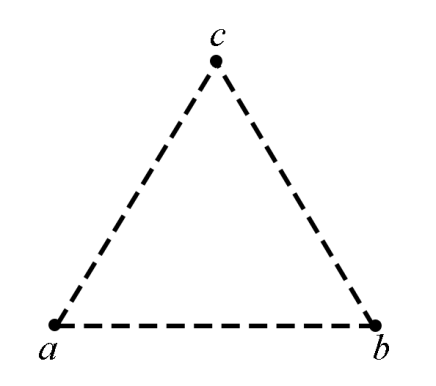
原题来源中的未美化配图（原Word内嵌图）所用高中知识
多普勒效应；相干波；路程差；余弦定理。
读题与思路
区分传播速度差与接收频率变化；干涉中最近的另一增强点对应一个波长的路程差。
分步解析
- （1）A中先看见闪电后听见雷声，原因是光速远大于声速，不是多普勒效应。D中声音在空气、水中速度不同，由介质决定，也不是多普勒效应。
- B中超声波被运动血液反射，反射波频率变化；C中远去列车的汽笛被听到的频率降低；E中双星运动使朝向观察者的速度周期变化，谱线发生周期移动。这三项均可用多普勒效应解释，选BCE。
- （2）两根细杆同步触水，a、b两波源同相。c到两源等距，是路程差0的增强点。设ac上距c最近的另一增强点为d，则|bd−ad|=λ。已知cd=3l/8、ac=l，故ad=5l/8。
- 三角形abd中，ab=l、ad=5l/8、∠bad=60°。余弦定理给bd²=l²+(5l/8)²−2l(5l/8)cos60°=49l²/64，所以bd=7l/8。
- 于是λ=bd−ad=(7l−5l)/8=l/4，波速u=fλ=fl/4。
答案
（1）BCE。（2）（i）λ=l/4；（ii）u=fl/4。
检查与易错点
“离c最近的另一增强点”才允许取路程差一个波长。若漏掉“最近”，还可能对应整数倍波长，无法唯一确定。
本题来源：paper · cross · web-eol-current · drive-ref-1
题源与核验说明
- 2020.html旧版解析文件；SHA-256：c5ef2efff3be9778f900c0d2b2f6071c248276c3115ff58705f1a27aa921ad37
- 2020年高考真题——理科综合（全国卷Ⅰ） Word版含解析【KS5U 高考】.doc所附参考资料；SHA-256：fe7988c1fd1e51495fa1d73ccd6fc9a74398addfd39c398aa99cde9b79fac13f
- 自主招生在线 2020全国Ⅰ卷理综原卷与参考答案未成功重新下载此旧链接；仅保留先前来源指向。现存可用题源见本页其他链接。
- 同卷参考答案页（物理选择、实验、计算与选考）未成功重新下载此旧链接；仅保留先前来源指向。现存可用题源见本页其他链接。
- 中国教育在线 2020全国Ⅰ理综试题（湖北省教育考试院题图）2026-10-06重新读取原卷图：第5—9页核14—25，第13—14页核33—34。核对原题、选项、核素左上下标和实验测点；正文继续保留清晰重绘SVG与原始测点图。旧CDN PDF出现502，未将失败请求写为成功。